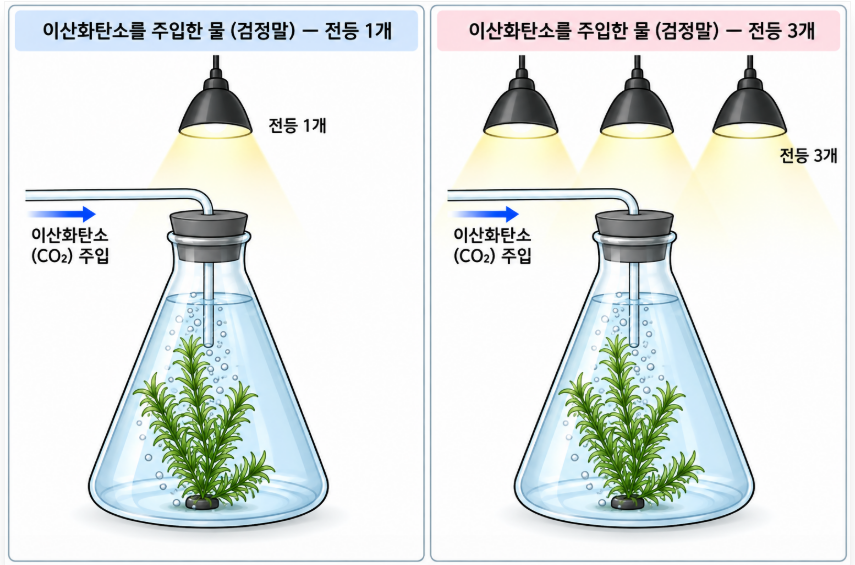
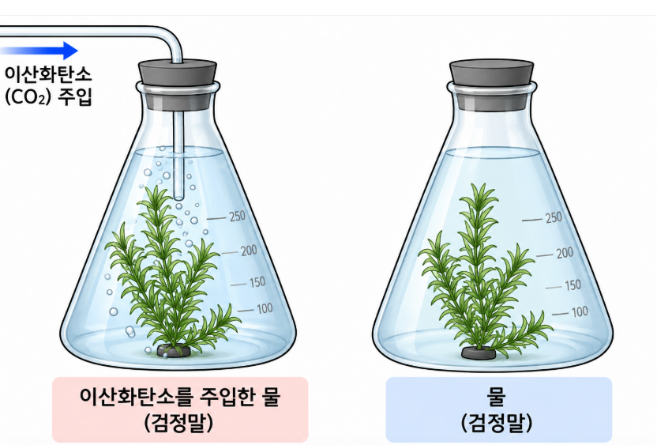

Mission 2: 최적 조건
광합성에 영향을 미치는 환경 요인을 탐구해보세요.
Step 1
과정/요인
과정/요인
Step 2
빛
빛
Step 3
CO₂
CO₂
Step 4
온도
온도
Step 5
최적조건
최적조건
STEP 1: 광합성 과정과 환경 요인 도출
광합성의 과정을 식으로 먼저 완성하고, 영향을 줄 수 있는 환경 요인 3가지를 예측해 봅시다.
1) 광합성 과정 정리
( ) +
( )
( )
⟶
( )
( )
+
( )
STEP 2: 빛의 세기와 광합성량
가설 설정

빛의 세기가 ( ) 질수록, 광합성량이 ( ) 할 것이다.
실험 조건 설계
[아래의 변인을 알맞은 칸으로 모두 드래그 하세요]
☀️ 빛의 세기
💨 이산화 탄소 농도
🌡️ 온도
🫧 광합성량(산소발생량)
🌱 식물의 종류
💧 토양의 습도
STEP 3: 이산화 탄소 농도와 광합성량
가설 설정

이산화 탄소 농도가 ( ) 질수록, 광합성량이 ( ) 할 것이다.
실험 조건 설계
☀️ 빛의 세기
💨 이산화 탄소 농도
🌡️ 온도
🫧 광합성량(산소발생량)
🌱 식물의 종류
💧 토양의 습도
STEP 4: 온도와 광합성량
가설 설정
온도가 ( ) 질수록, 광합성량이 ( ) 할 것이다.
실험 조건 설계
☀️ 빛의 세기
💨 이산화 탄소 농도
🌡️ 온도
🫧 광합성량(산소발생량)
🌱 식물의 종류
💧 토양의 습도
STEP 5: 광합성 최적 조건 종합 분석
세 가지 요인을 동시에 조절하여 광합성량이 최대가 되는 최적 조건을 찾아보세요.
현재 분당 산소 방출 기포 수: 25개